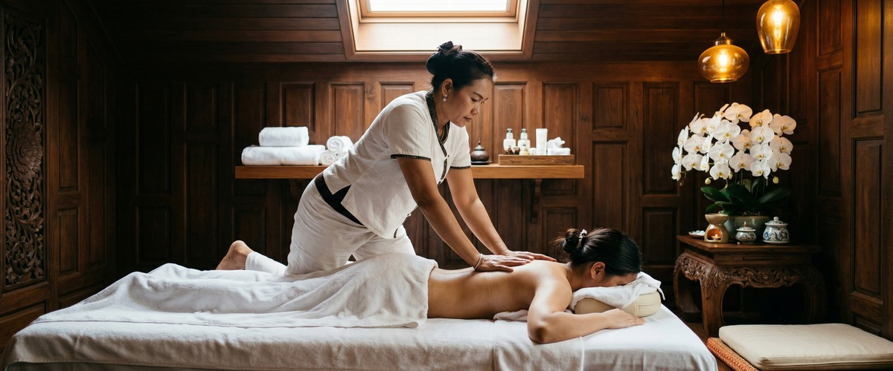
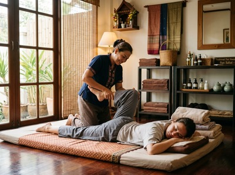

That familiar tightness across the tops of your shoulders, the neck that won't turn properly when you reverse the car, the dull ache that starts mid-morning and builds through the day.

A stiff neck and stiff shoulders are among the most common physical complaints people in Greenock and across Inverclyde bring through our door, and for good reason: they make everything harder. Thai massage targets the muscles, tension, and restricted movement that cause these symptoms directly.
Neck and shoulder stiffness refers to discomfort or pain when trying to turn, move, or flex the neck, often accompanied by tightness across the upper back and shoulder muscles. The trapezius, the large muscle spanning your upper back and neck, is usually at the centre of it. When it becomes overworked or held in a fixed position for too long, it tightens, shortens, and starts to pull on the surrounding structures.

Common causes include prolonged sitting at a desk, sleeping in an awkward position, poor posture while using a phone or screen, and accumulated stress that causes the muscles of the neck and upper back to contract involuntarily. NHS Inform notes that neck problems can cause pain that spreads to the shoulders, arms, and upper back, often starting with no obvious single cause.
A meta-analysis of 12 randomised controlled trials published on PubMed Central found that massage therapy produced significant immediate effects on neck pain, including measurable reductions in pain intensity and improved range of motion. This is not a surprise to anyone who has experienced skilled therapeutic massage. Releasing the tension held in the trapezius and surrounding cervical muscles allows blood to flow back into restricted tissue, restoring mobility and reducing the pain signals being sent to the brain.
Traditional Thai Massage, a technique using assisted stretching and acupressure applied along the body's sen energy lines, is particularly effective here. The therapist works through the posterior neck, the tops of the shoulders, and the upper back, using sustained pressure to release trigger points and then guiding the body through gentle assisted stretches to restore the range of movement the stiffness has taken away. Thai Oil Massage complements this with flowing strokes and targeted pressure that warm the tissue and ease deep-seated tension in the shoulder girdle.
Thai Sports Massage is another strong option, especially if the stiffness is driven by physical strain rather than postural or stress-related causes. It uses more direct, targeted techniques on specific muscle groups to accelerate recovery and restore full movement. You can book your session online and note any specific areas you'd like Jariya to focus on.
Every session at Thai Massage Greenock on South Street begins with a conversation. Jariya will ask where the stiffness is sitting, how long you've had it, and whether there are particular movements that make it worse. She keeps detailed notes on every client, so if you've been in before, she'll already know your history and can build on previous work.
Depending on what you're experiencing, Jariya may work through a combination of techniques: sustained acupressure on the upper trapezius and neck muscles, assisted neck stretches that gently restore rotation and extension, and shoulder mobilisation work to release the joint and surrounding tissue. The pressure is adapted throughout to what your body is responding to. Sessions are available at our Greenock studio, easy to reach from across Inverclyde. Book a session to get started.
Neck and shoulder stiffness is particularly common in office workers who sit at a screen for six or more hours a day, tradespeople who work with their arms raised or in awkward postures, drivers who spend long shifts behind the wheel, parents who carry and lift young children repeatedly, and anyone who carries significant work or personal stress in their body. If you recognise yourself in that list, a regular session is not a luxury. It is the kind of maintenance your body genuinely needs. Book your first appointment and feel the difference a trained hand makes.
Yes. Massage works directly on the muscles responsible for neck stiffness, including the trapezius and surrounding cervical muscles, by releasing tension, improving circulation, and restoring range of motion. Research supports its effectiveness for both immediate pain relief and short-term improvement in mobility. Regular sessions can also help prevent the stiffness from returning.
Many people notice a significant reduction in tension and improved movement immediately after a session. Some experience mild tenderness for 24 to 48 hours as the muscles adjust, particularly if the stiffness has been present for a while. The relief then typically deepens over the following day or two.
For chronic or recurring stiffness, a session every two to four weeks is generally the most effective approach. This allows each session to build on the last, gradually reducing the baseline tension your muscles carry. If your stiffness is linked to posture or a desk-based job, more frequent initial sessions can help reset the tissue before moving to a maintenance schedule.
Yes, when delivered by a trained and certified therapist. Jariya Malone, who trained at Bangkok's Wat Po temple, assesses each client's condition before beginning and adapts pressure and technique accordingly. If you have a specific injury, disc problem, or recent trauma to the neck, please mention this at the start of your session so the treatment can be tailored safely.
Stress-related neck stiffness is caused by involuntary muscle contraction: the body holds tension in the neck and upper back when under psychological pressure. Physical causes include poor posture, sleeping position, or overuse. In practice, the two often overlap. Thai massage addresses both by working on the muscle tissue directly and activating the parasympathetic nervous system, which helps the body release stress-held tension.
Traditional Thai Massage is excellent for shoulder stiffness because it combines acupressure with assisted stretching, which addresses both the tight muscle tissue and the restricted joint movement. Thai Oil Massage is a good alternative if you prefer a softer, flowing approach. Thai Sports Massage works well if the stiffness is linked to physical activity or strain. Jariya can advise on the best fit for your specific symptoms when you book.